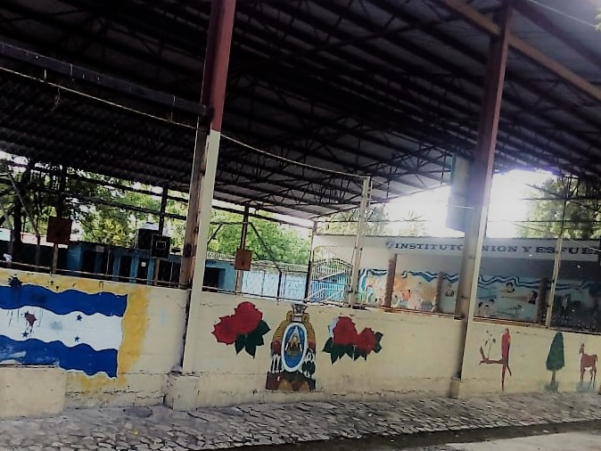

- 
Historia
Colonia Independencia,Villanueva, Cortes, Honduras
El Instituto Oficial Unión y Esfuerzo fue creado en el año de 1978 como consecuencia de la organización de un grupo de personas interesadas en el desarrollo de la comunidad.
Al inicio fue una institución privada que funcionaba en las instalaciones de la Escuela Urbana del municipio, en la jornada nocturna, luego se convirtió en una institución semi oficial y fue hasta hasta el año 1986 que pasó a ser una Instituto Oficial.
Desde su creación hasta el año 1998 nuestra institución solo contaba con la modalidad de Ciclo Común y en 1999 se implementa el Bachillerato en Promoción Social y en 2004 el Bachillerato en Administración de Empresas Agropecuarias,
modalidades con las cuales el Instituto Oficial Unión y Esfuerzo cuenta actualmente.
Bachilleratos
El instituto cuenta con los siguientes Bachilleratos:
*Bachillenato Tecnico Profesion En Ciencias Y Humanidades(BTP-CH)
*Bachillerato Tecnico Profesional En Informatica(BTP-I)
*Bachillerato Tecnico Profesional En Contaduria Y Finanzas
*Bachillerato Tecnico Profesional En Administracion De Empresas(BTP-ADMON)
Ademas de eso cuenta con:
*Amplias Instalaciones
*Laboratorio de Ciencias Naturales
*Laboratorio de Computacion
*Biblioteca Virtual
*Cafeteria
*Area de Consejeria
*Area de Orientacion
Requisitos De Matricula
Para el ingreso a las modalidades de Ciclo Común Cultura General el aspirante requiere.
• Presencia de al menos uno de padres de familia.
• Partida de Nacimiento Original
• Certificación de Estudios finales de sexto grado
• Dos fotografías Tamaño Carnet.
Para el ingreso a las modalidades de Bachillerato En Administración de Empresas Agropecuarias y Bachillerato Promoción Social el estudiante requiere.
• Presencia de al menos uno de padres de familia.
• Partida de Nacimiento Original
• Certificación de Estudios de ciclo común o nivel equivalente
• Dos fotografías Tamaño Carnet
Modalidades
El instituto cuenta con la modalidad de PRESENCIAL Y MAJAD Y Con las Siguientes Jornadas:
*Matutina
*Verpertina
*Nocturna
Misión
Somos una institución educativa del nivel medio, de carácter oficial o gubernamental, cuyo objetivo fundamental es formar ciudadanos y ciudadanas, con calidad profesional y humana, respetuosos de la vida en todas sus manifestaciones, democráticos, solidarios, responsables, pro-activos, equitativos y conscientes de sus deberes y derechos para con el mismo, su familia y la Patria.
Visión
Convertir la institución en la primera de la región en brindar servicios educativos de calidad, comprometidos con el desarrollo social y económico de la zona, fortaleciendo la educación en valores, como el amor al trabajo y de esta forma proporcionar una educación científica y popular en consonancia con un mundo globalizado.
Horario
Presencial
Matutina=Lun-Vie: 7:00-12:00Vespertina=Lun-Vie: 12:00-5:30
Nocturna=Lun-Vie: 6:00-9:30
MAJAD
Sáb: 12:30-06:30Dom: 7:00-12:00